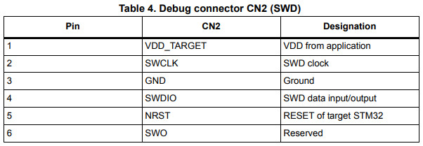
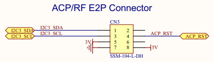

Steward
分享是一種喜悅、更是一種幸福
微處理器 - STMicroelectronics STM32F429 (STM32F429I-DISC1) - 接腳
參考資訊：
https://www.st.com/resource/en/user_manual/dm00093903-discovery-kit-with-stm32f429zi-mcu-stmicroelectronics.pdf
| Label | Description |
|---|---|
| JP1 | 兩端都是接到GND |
| JP2 | 兩端都是接到GND |
| JP3 | ON: 正常開機 |
| LD1 | ST-LINK通訊指示 |
| LD2 | 電源指示 |
| LD3 | PG13 |
| LD4 | PG14 |
| LD5 | VBUS(PB13) |
| LD6 | Overcurrent(PC5) |
| CN2 | SWD  |
| CN3 | E2P  |
| CN4 | ON: ST-LINK連接到MCU |